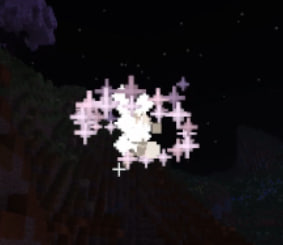
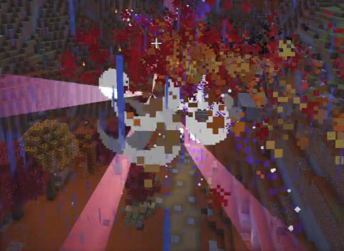
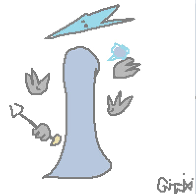
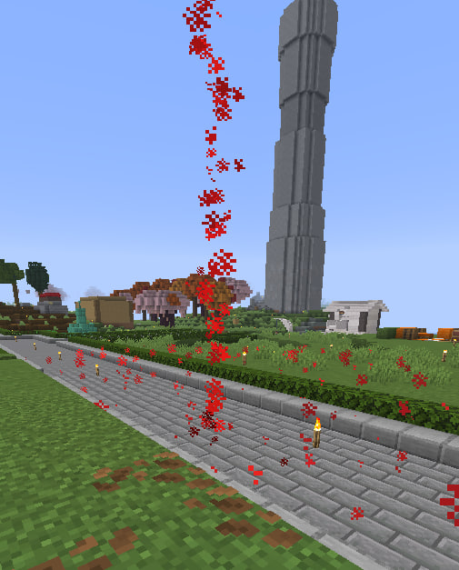
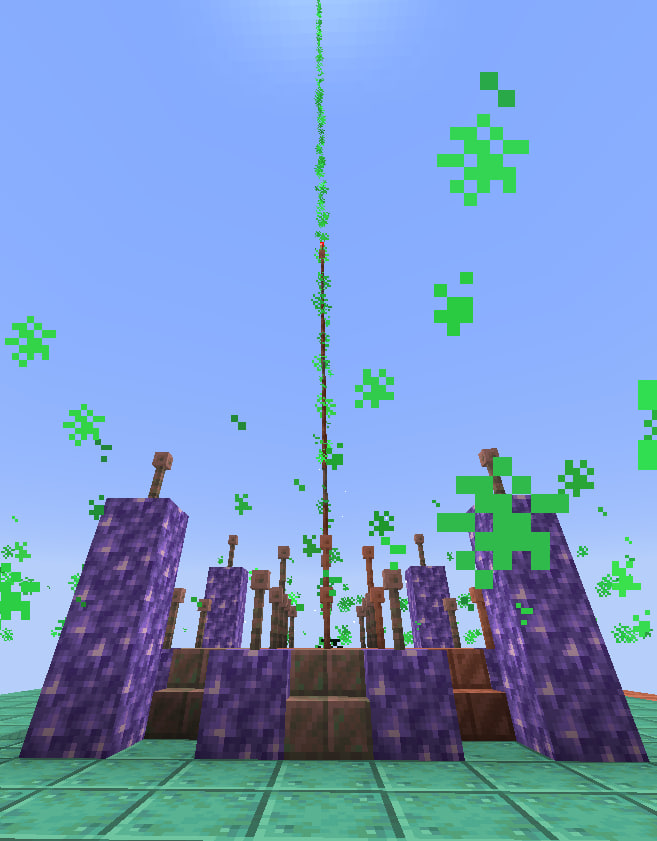
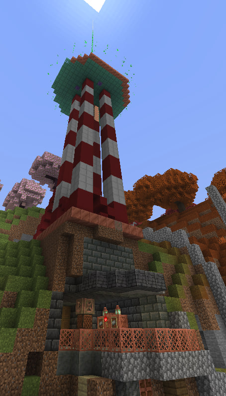
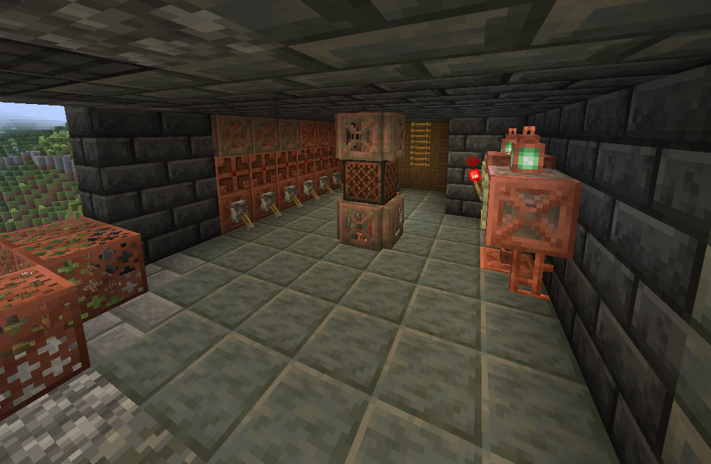

тут все персонажи и предпологаемые персонажи
так же лорные предметы!

Главный лорный персонаж. Его происхождение не известно но есть предположение что тот является ангелом.
Подтверждение что Бим является ангелом является его схожесть с библейскими ангелами. У него как и у ангелов есть кольца и центр но увы нету крыльев.
Так же подтверждение теории что Бим является ангелом что существует кто-то свыше то есть боги.
До открытия ада Бим находился на спавне. Но когда открывался ад бима засосало в красное облако

На картинке видно что бима утаскивает в красное облако. Есть предположение что он для начала попал в Тартар т.к. тот находится ниже преисподни
В тартар наказывают ангелов когда те провинились. Почему именно тартар? Ответ прост облако куда пропал Бим красное и оранжевое.
Бим провинился перед богами. Но увы тут про персонажа а не теории. Персонаж является белой точкой с кольцом, а еще он сирота .

Предпологаемый бог свыше. Единствненное что подтвержает что он существует это то что молнии бьют в большое скопление людей.
Он является богом энергии имея возможность бить молниями без грозы. Возможно именно что он заглавлял попытку убить Бима так как тот как раз таки и наказывает игроков молниями.
Так же предпологаю что он самый злой и строгий бог. При каждой попытки связи с Бимом бывает молния даже в аду и это показывает насколько ловерн агресивен в сторону к игрокам.

на местах где находятся лучи были пойманы сигналы с первого задания Бима и с помощью одного из них мы с ним связались и тот стал главным лучем для связи с небесами или другим измерением.
По крайней мере мы знаем что сигнал от них можно усилять и модифицировать с помощью чего можно слышать помехи, сигналы с других планет и так далее.

Является главным источником связи с небесами и другими местами. Он является самым сильным источником связи через него можно связатся с Бимом.
Он находится на радиостанции возле спавна... Бим поставил Серенады Трубадура (Луч солнца золотого) из советского мультфильма По следам бременских музыкантов после того как вышка наладила связь с ним.
Бим любит землю и передает сигналы через главный луч

Центр связи с вышнеми. С помощью нее можно связатся с верхним миром который выше обычного.
На данный момент башня находится на частоте где бим но я уверен что есть шанс что где-то там мы встретимся с оператором связи который будет говорить загадками и шрифтом виндинкс

На фото показан центр управления с частотами и радиопремником... Единствненное что там не работает это передача звука с высоты вышки.